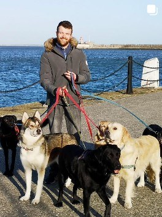
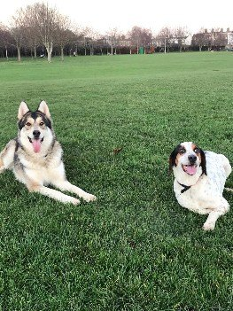

The friendly, familiar faces behind Alpha Dog Ireland — and the reason South Dublin dogs come home happy.

Steven has spent more than ten years doing what he loves — walking dogs around the coast and villages of South Dublin.
In that time he's walked just about every kind of dog there is: bouncy pups still learning the ropes, big energetic huskies and shepherds, gentle seniors who just want a steady stroll, and everything in between. Whatever your dog's age, size or personality, they're welcome in the pack.
What hasn't changed in all those years is the care. Steven is calm, patient and genuinely fond of every dog he looks after. You get the same trusted face at your door every day — someone your dog knows, trusts and gets excited to see.

Steven's own dog, Ayra, comes along on every single walk — and she's a huge part of what makes it work.
A calm, confident pack leader in her own right, Ayra sets the tone for the group. Nervous newcomers relax around her, over-excited dogs settle down, and the whole pack moves together as one happy crew.
It's the secret ingredient behind those big smiles you'll see in the gallery: dogs feel safe, sociable and part of something — with Ayra quietly keeping everyone in line.
The same reliable person, in and out of your home, every weekday.
Every dog treated like one of Steven's own, whatever their quirks.
Long walks, fresh sea air and good company — the recipe for a content dog.
A decade of reading dogs and knowing exactly what each one needs.
Have a chat about your dog and see if there's a space in the pack.